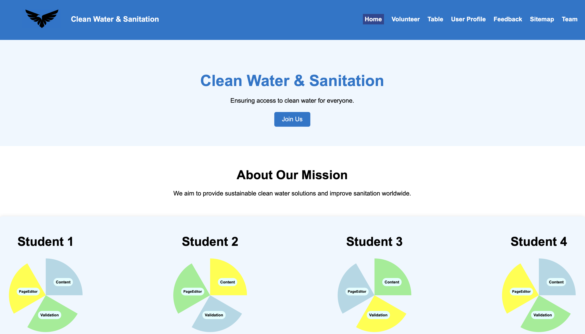
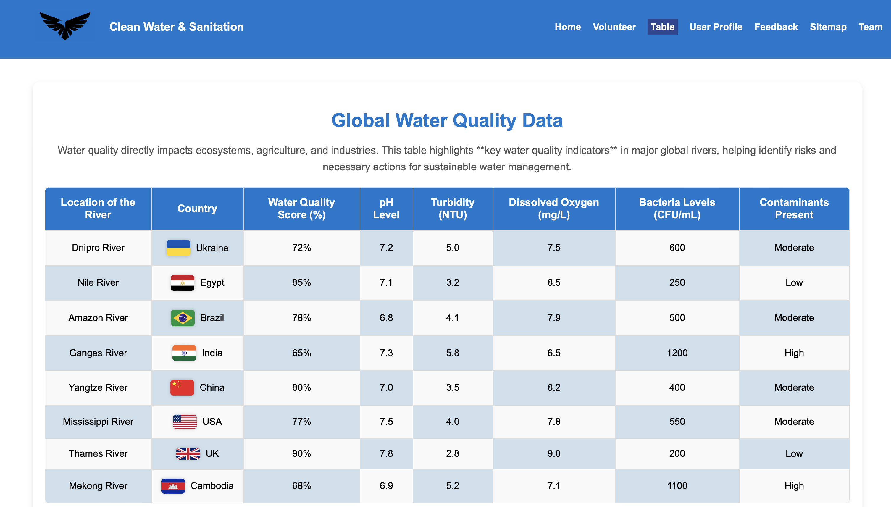

Homepage
Technical Description
I designed and developed the Home Page as the central hub of Gemma's Team website, ensuring a welcoming and seamless experience for visitors. I created a modern, clean, and visually appealing design that highlights important content while maintaining an intuitive layout.
I developed a JavaScript button that enhances user interaction. When someone clicks "Join Us," I programmed an alert message to appear, reinforcing engagement with my initiative. This interactive element makes the page feel more developed.
Also I added subtle hover effects and animations to the navigation bar, making interactions more engaging.
Accessibility
I carefully structured the navigation menu, making it easy for users to access different sections like the Volunteer, Table, User Profile, and more. I placed clear call-to-action buttons to guide users toward their next steps. One of the standout features I built is the interactive section with four dynamic circular diagrams. I designed these SVG-based circles to visually represent extra pages different student, and I implemented clickable areas inside them, leading to different pages like Page Editor, Content, and Validation.
Every detail on this page, from fonts to colors to layout, was designed by me to ensure consistency, readability, and visual harmony. This Home Page isn’t just a landing space—it’s an experience I crafted to inform, engage, and inspire action.
Link to the validation page
Table
Technical Description
I developed the Water Quality Table Page with a structured, responsive table displaying global water sanitation data. Using CSS nth-child() selectors, I created a chessboard pattern for better readability and implemented column highlighting on hover for quick comparisons.
The Row Hover Effect subtly highlights an entire row when hovered, using background; to enhance data visibility without overwhelming the design. Additionally, country flags are embedded alongside country names using display: flex for alignment, ensuring a visually engaging and informative layout. A scrollable table container maintains usability across all screen sizes.
Accessibility
I used semantic HTML for screen readers, ensuring proper navigation structure. The Row Hover Effect helps users track data effortlessly, and keyboard-friendly interactions improve usability. Alt attributes for flag images enhance accessibility, while high-contrast colors and responsive design make the page inclusive for all users.
Link to the validation page
Link to the page
Content Page
Technical Description
I developed the Content Page with a structured, responsive layout that ensures clear navigation and readability. The fixed header enhances accessibility by keeping key navigation links visible at all times, while the side menu provides quick access to different sections of the page. The content area is styled with a card-like design using box-shadow and border-radius, improving visual hierarchy and readability.
The navigation menu utilizes display: flex for proper alignment, while position: absolute is applied to the side menu to keep it aligned on the left. The main content follows a centered design with margin auto and a max-width for optimal readability. Interactive elements such as hover effects on links and a fixed "Go to Top" button enhance user engagement and usability.
Accessibility
I implemented semantic HTML5 elements to improve screen reader compatibility. The design ensures high color contrast for readability, and all images include alt attributes for better accessibility. The navigation structure supports keyboard accessibility, allowing users to easily move through links. A fully responsive layout ensures usability across different screen sizes, making the page inclusive for all users.
Link to the validation page

Link to the page
Challenges and Lessons Learned
One of the key challenges I faced during the implementation was ensuring smooth navigation between sections and pages without relying on JavaScript. Instead of using event listeners, I utilized HTML anchor links (id attributes and # navigation) to create a "Go to Top" button and internal page links. By linking to specific sections using href="pagelink#ID", users can navigate efficiently while maintaining a seamless experience.
Another challenge was designing a fixed aside menu that remains accessible without interfering with the main content. To solve this, I positioned the menu using position: absolute and ensured it had an appropriate z-index to prevent overlap issues. Implementing hover effects on menu items improved user interaction and accessibility.
For the table row highlighting, I used CSS :hover pseudo-class to change the background color dynamically when a user hovers over a row, making it easier to read and compare data. This technique improved visual clarity without adding extra complexity.
Through these challenges, I learned the importance of using pure CSS and semantic HTML to achieve interactivity and responsiveness without unnecessary scripts. The experience reinforced the value of proper structuring with id attributes, flexible layouts, and accessibility considerations to create a more user-friendly and efficient webpage.
Compliance
To guarantee inclusion and adherence to contemporary web standards, the Clean Water & Sanitation webpages adhere to Janet's recommendations for technological performance, ethical content, accessibility, and security.
Keyboard-friendly navigation, high contrast colors, alt attributes for pictures, and semantic HTML all contribute to accessibility. By avoiding inline JavaScript and adhering to secure coding techniques, security is preserved and vulnerabilities are decreased.
The information is factually correct and appropriate because it complies with ethical norms. For a smooth user experience, responsive design, quickly loading elements, and organized navigation maximize technical performance.
Even if the website satisfies important compliance standards, continuous enhancements—like performance enhancements, security upgrades, and accessibility testing—will guarantee that Janet's rules are followed going forward.
References
- Duckett, J. (2011). *HTML and CSS: Design and Build Websites*. John Wiley & Sons, Inc. Retrieved March 9, 2025
- MDN Web Docs. (2025). *HTML & CSS Documentation*. Retrieved March 9, 2025 from https://developer.mozilla.org/
- Wikipedia contributors. (2025). *HTML*. Wikipedia. Retrieved March 9, 2025 from https://en.wikipedia.org/wiki/HTML
- OpenAI. (2025). *ChatGPT*. Retrieved March 9, 2025 from https://www.openai.com/chatgpt
- European Environment Agency (EEA). (2025). *European Environment Agency Reports*. Retrieved March 9, 2025 from https://www.eea.europa.eu/
- United Nations Environment Programme (UNEP). (2025). *UNEP Reports*. Retrieved from March 9, 2025 https://www.unep.org/
- Ministry of Environmental Protection of Ukraine. (2025). *Dnipro Water Analysis*. Retrieved March 9, 2025 from https://menr.gov.ua/
- US Geological Survey. (2025). *Mississippi River Reports*. Retrieved March 9, 2025 from https://www.usgs.gov/